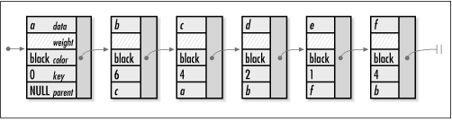

16.3 Implementation and Analysis of
Minimum Spanning Trees
To compute a
minimum spanning tree for an undirected, weighted graph, we
first need a way to represent weighted graphs using the basic
abstract datatype for graphs presented in Chapter
11. We also need a way to keep track of the information
that Prim's algorithm requires for vertices and edges. This is
the point of the MstVertex structure; it is
used for vertices in graphs for which we plan to compute
minimum spanning trees (see Example
16.2). The structure consists of five members:
data is the data associated with the vertex,
weight is the weight of the edge incident to
the vertex, color is the color of the vertex,
key is the key value of the vertex, and
parent is the parent of the vertex in the
minimum spanning tree.
Building a graph of MstVertex
structures is nearly the same as building a graph containing
other types of data. To insert a vertex into the graph, we
call graph_ins_vertex and pass
an MstVertex structure for
data. Similarly, to insert an edge, we call
graph_ins_edge and pass
MstVertex structures for data1
and data2. When we insert a vertex, we set
only the data member of the
MstVertex structure. When we insert an edge,
we set the data member of
data1, and the data and
weight members of data2. In
data2, the weight member is
the weight of the edge from the vertex represented by
data1 to the vertex represented by
data2. In practice, weights are usually
computed and stored as floating-point numbers. Since key
values are computed from the weights, these are floating-point
numbers as well.
The mst
operation begins by initializing every vertex in the list of
adjacency-list structures. We set the initial key value of
each vertex to DBL_MAX, except the start
vertex, whose key value is set to 0.0. Recall that in the
graph abstract datatype, a graph was represented as a list of
adjacency-list structures, each of which contained one vertex
and a set of vertices adjacent to it (see Chapter
11). We use the vertex stored in each adjacency-list
structure to maintain the color, key value, and parent of the
vertex. The point of maintaining this information in the list
of adjacency-list structures, as opposed to vertices in the
adjacency lists themselves, is that we can keep it in one
place. Whereas a single vertex may appear in numerous
adjacency lists, each vertex appears in the list of
adjacency-list structures exactly once.
At the center of Prim's algorithm is a single
loop that iterates once for each vertex in the graph. We begin
each iteration by selecting the vertex that has the smallest
key value among the white vertices. We color this vertex black
where it resides in the list of adjacency-list structures.
Next, we traverse the vertices adjacent to the selected
vertex. As we traverse each vertex, we look up its color and
key value in the list of adjacency-list structures. Once we
have located this information, we compare it with the color
and key value of the selected vertex. If the adjacent vertex
is white and its key value is less than that of the selected
vertex, we set the key value of the adjacent vertex to the
weight of the edge between the selected vertex and the
adjacent vertex; we also set the parent of the adjacent vertex
to the selected vertex. We update this information for the
adjacent vertex where it resides in the list of adjacency-list
structures. We then repeat this process until all vertices
have been colored black.
Once the main loop in Prim's algorithm
terminates, we are finished computing the minimum spanning
tree. At this point, we insert each black
MstVertex structure from the list of
adjacency-list structures into the linked list
span. In span, the vertex
whose parent is set to NULL is the vertex at the root of the
minimum spanning tree. The parent member of
every other vertex points to the vertex that precedes it in
the span. The weight member of each
MstVertex structure is not populated because
it is needed only for storing weights in adjacency lists. Figure
16.2 shows the list of MstVertex
structures returned for the minimum spanning tree computed in
Figure
16.1.

The runtime complexity of mst is O (EV
2), where V
is the number of vertices in the graph and E is the number of edges. This comes
from the main loop, in which we select vertices and compare
weights and key values. For each of the V vertices we select, we first
traverse V elements in the list
of adjacency-list structures to determine which white vertex
has the smallest key value. This part of the main loop is
O (V
2) overall. Next, for each vertex adjacent
to the vertex we select, we consult the list of adjacency-list
structures for information about whether to change its key
value and parent. Over all V
vertices, the list is consulted E times, once for each of the E edges in all of the adjacency lists
together. Each of these consultations requires O (V ) time to search the list.
Therefore, for all V vertices
that we select, an O (V )
operation is performed E times.
Consequently, this part of the loop is O (EV 2), and the main loop
overall is O (V 2 + EV 2), or O (EV 2). Since the loops before
and after the main loop are O
(V ), the runtime complexity of mst is O
(EV 2).
However, recall that with a little improvement (discussed at
the end of the chapter), Prim's algorithm runs in O (E lg
V ) time.
Example 16.2.
Implementation for Computing Minimum Spanning Trees /*****************************************************************************
* *
* --------------------------------- mst.c -------------------------------- *
* *
*****************************************************************************/
#include <float.h>
#include <stdlib.h>
#include "graph.h"
#include "graphalg.h"
#include "list.h"
/*****************************************************************************
* *
* ---------------------------------- mst --------------------------------- *
* *
*****************************************************************************/
int mst(Graph *graph, const MstVertex *start, List *span, int (*match)(const
void *key1, const void *key2)) {
AdjList *adjlist;
MstVertex *mst_vertex,
*adj_vertex;
ListElmt *element,
*member;
double minimum;
int found,
i;
/*****************************************************************************
* *
* Initialize all of the vertices in the graph. *
* *
*****************************************************************************/
found = 0;
for (element = list_head(&graph_adjlists(graph)); element != NULL; element =
list_next(element)) {
mst_vertex = ((AdjList *)list_data(element))->vertex;
if (match(mst_vertex, start)) {
/***********************************************************************
* *
* Initialize the start vertex. *
* *
***********************************************************************/
mst_vertex->color = white;
mst_vertex->key = 0;
mst_vertex->parent = NULL;
found = 1;
}
else {
/***********************************************************************
* *
* Initialize vertices other than the start vertex. *
* *
***********************************************************************/
mst_vertex->color = white;
mst_vertex->key = DBL_MAX;
mst_vertex->parent = NULL;
}
}
/*****************************************************************************
* *
* Return if the start vertex was not found. *
* *
*****************************************************************************/
if (!found)
return -1;
/*****************************************************************************
* *
* Use Prim's algorithm to compute a minimum spanning tree. *
* *
*****************************************************************************/
i = 0;
while (i < graph_vcount(graph)) {
/**************************************************************************
* *
* Select the white vertex with the smallest key value. *
* *
**************************************************************************/
minimum = DBL_MAX;
for (element = list_head(&graph_adjlists(graph)); element != NULL; element
= list_next(element)) {
mst_vertex = ((AdjList *)list_data(element))->vertex;
if (mst_vertex->color == white && mst_vertex->key < minimum) {
minimum = mst_vertex->key;
adjlist = list_data(element);
}
}
/**************************************************************************
* *
* Color the selected vertex black. *
* *
**************************************************************************/
((MstVertex *)adjlist->vertex)->color = black;
/**************************************************************************
* *
* Traverse each vertex adjacent to the selected vertex. *
* *
**************************************************************************/
for (member = list_head(&adjlist->adjacent); member != NULL; member =
list_next(member)) {
adj_vertex = list_data(member);
/***********************************************************************
* *
* Find the adjacent vertex in the list of adjacency-list structures. *
* *
***********************************************************************/
for (element = list_head(&graph_adjlists(graph)); element != NULL;
element = list_next(element)) {
mst_vertex = ((AdjList *)list_data(element))->vertex;
if (match(mst_vertex, adj_vertex)) {
/*****************************************************************
* *
* Decide whether to change the key value and parent of the *
* adjacent vertex in the list of adjacency-list structures. *
* *
*****************************************************************/
if (mst_vertex->color == white && adj_vertex->weight <
mst_vertex->key) {
mst_vertex->key = adj_vertex->weight;
mst_vertex->parent = adjlist->vertex;
}
break;
}
}
}
/**************************************************************************
* *
* Prepare to select the next vertex. *
* *
**************************************************************************/
i++;
}
/*****************************************************************************
* *
* Load the minimum spanning tree into a list. *
* *
*****************************************************************************/
list_init(span, NULL);
for (element = list_head(&graph_adjlists(graph)); element != NULL; element =
list_next(element)) {
/**************************************************************************
* *
* Load each black vertex from the list of adjacency-list structures. *
* *
**************************************************************************/
mst_vertex = ((AdjList *)list_data(element))->vertex;
if (mst_vertex->color == black) {
if (list_ins_next(span, list_tail(span), mst_vertex) != 0) {
list_destroy(span);
return -1;
}
}
}
return 0;
} |